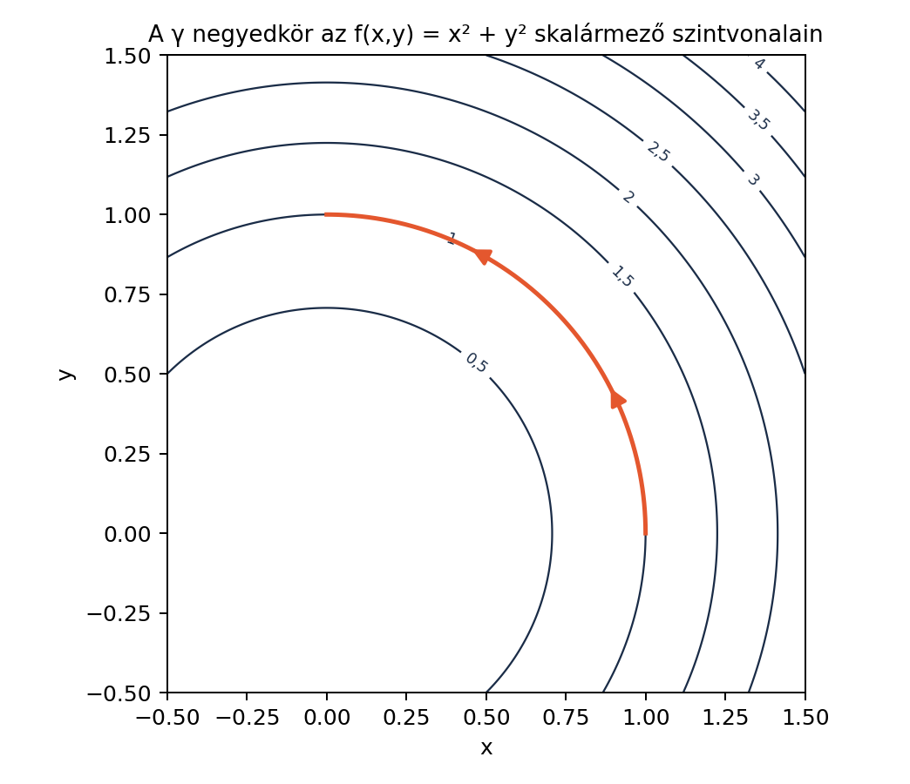

27.2 Görbék ívhossza és a
skalármező vonalintegrálja
27.2.1 Motiváció
Egy vékony, görbe alakú drót tömege nem számítható pusztán a
hosszából, ha az anyag sűrűsége a drót mentén pontról pontra változik.
Hasonlóan, ha egy kerítés alapvonala nem egyenes, és a magassága is
változik a hely függvényében, akkor a festendő felület nagysága sem
egyszerűen hossz × magasság. Mindkét kérdés egy közös matematikai
művelethez vezet: egy skalármezőt kell összegeznünk egy görbe mentén, az
ívhossz szerint súlyozva. Az Ívhossz, forgásfelület
felszíne és súlypont és az Egyenesek, síkok és
paraméteres görbék alfejezetekben megtanultuk az ívhossz
kiszámítását; most azt általánosítjuk arra az esetre, amikor a görbe
pontjaiban egy
skalárérték is adott.
27.2.2 Szemléletes kép
Tekintsünk egy
görbét a síkban, amely egy
skalármező tartományán halad át. A skalármező értékei a sík pontjaiban
például hőmérsékletet, magasságot vagy anyagsűrűséget jelenthetnek. A
görbe mentén az
értékét az ívhossz szerint „átlagoljuk”, azaz minden kis ívdarab
hosszával súlyozva összegezzük.

A γ negyedkör az f(x,y) = x² + y²
skalármező szintvonalain - Számítási illusztráció: a szintvonalak
koncentrikus körök, a γ egység sugarú negyedkörön az f értéke 1. A görbe
menti integrál ezt az értéket ívhossz szerint súlyozza.
Az ábrán a
negyedkör az
mező szintvonalait metszi. Mivel a kör pontjaiban
,
a mező értéke a görbe mentén állandó; a görbe menti integrál ekkor
egyszerűen
-szer
az ívhossz. Általános esetben
értéke változik a görbe mentén, és az integrál a súlyozott hosszat
adja.
27.2.3 A skalármező
vonalintegráljának definíciója
Emlékeztetőül: skalármezőnek nevezünk egy
függvényt, ahol
(gyakorlatban
vagy
),
és
a tér minden pontjához egy valós számot rendel. A sima
görbe
olyan folytonosan differenciálható leképezés, amelyre
minden
esetén.
Közelítsük a görbét az
felosztással. Legyen
,
és a görbe
-edik
kis darabjának hosszát jelölje
.
Az Ívhossz, forgásfelület felszíne és súlypont
alfejezetből tudjuk, hogy kis
esetén
Ha a görbe mentén adott egy
skalármező, akkor az
szorzatok összege közelíti a keresett mennyiséget:
A felosztás finomításával a jobb oldal Riemann-összege az
egyváltozós függvény integráljához tart, feltéve, hogy
folytonos a görbe mentén. Ez vezet a következő definícióhoz.
Definíció. Legyen
sima görbe, és legyen
folytonos skalármező olyan
tartományon, amelyre
.
Az
skalármezőnek a
görbe mentén vett ívhossz szerinti vonalintegrálja
(scalar line integral)
ahol
az ívhosszelem.
A definícióból látszik, hogy a skalármező vonalintegrálja egy
közönséges, egyváltozós határozott integrálra vezet vissza. A számítás
receptje ezért a paraméterezéssel kezdődik.
27.2.4 Kidolgozott példák
1. példa. Számítsuk ki az
integrált, ahol
,
.
Megoldás. A görbe deriváltja
,
abszolút értéke
A skalármező a görbén:
.
Ezért
Ellenőrzés: a görbe hossza
,
az
érték átlaga a görbén
,
így a szorzat
,
ami egyezik.
2. példa. Legyen
,
,
és
.
Számítsuk ki
-t.
Megoldás. Most
.
A skalármező a görbén:
Ezért
Ellenpélda (fontos figyelmeztetés). Ugyanez az
mező az
és
pontok között más görbén más értéket ad. Az előbbi negyedkörön az
eredmény
,
míg az egyenes szakaszon
,
esetén
így
A skalármező vonalintegrálja tehát általában nem csak a
végpontoktól függ, hanem az úttól is. Ez éles különbség a
későbbi, Vektormező vonalintegrálja: munka és
cirkuláció alfejezetben tárgyalt útfüggetlen esetektől.
27.2.5
Paraméterezésfüggetlenség
Felmerül a kérdés: vajon a definíció függ-e attól, hogyan
paraméterezzük a görbét? A következő tétel azt mondja ki, hogy nem — és
az irány megfordítása sem változtat az eredményen, mert az ívhosszelem
mindig nemnegatív.
Tétel (paraméterezés- és irányfüggetlenség). Legyen
sima görbe, és legyen
szigorúan monoton, folytonosan differenciálható bijekció. Definiáljuk az
új paraméterezést
képlettel. Ha
folytonos a görbe mentén, akkor
A jobb oldali integrál tehát ugyanazt az értéket adja, akár növekvő
(),
akár csökkenő
()
az átparaméterezés.
Bizonyítás. Mivel
szigorúan monoton és folytonosan differenciálható, a
nem nulla, és előjele állandó. A
deriváltjára a láncszabályt alkalmazzuk:
Most a helyettesítéses integrál formula miatt, mivel a csökkenő
-re
és
:
A jobb oldalon a belső integrálra alkalmazva a
helyettesítést:
Mindkét esetben ugyanazt kaptuk, tehát az integrál független a
paraméterezéstől és a bejárási iránytól. ∎
Következmény. A skalármező vonalintegrálja mindig
irányfüggetlen: ha
és
ugyanazt a ponthalmazt ellentétes irányban járják be, akkor
.
Ez éppen azért van, mert
nemnegatív, szemben a vektormező vonalintegráljában szereplő
előjeles kifejezéssel.
27.2.6 Szakaszonként sima
görbék
A gyakorlatban előforduló görbék gyakran nem egyetlen sima képlettel
adottak, hanem véges sok sima ívből vannak összeállítva — például egy
négyzet kerülete vagy egy törött vonal.
Definíció. A
görbét szakaszonként simának nevezzük, ha megadható
úgy, hogy
folytonos, és az értelmezési tartománya véges sok részintervallumra
bontható, amelyeken
sima (azaz mindegyik darabon folytonosan differenciálható és a derivált
nem nulla). Ilyen görbére a skalármező vonalintegrálját a sima darabokon
vett integrálok összegeként definiáljuk:
ahol
a görbét alkotó sima ívek. A paraméterezésfüggetlenség minden darabra
külön érvényes, így az összegre is.
27.2.7 Számolási recept
A skalármező vonalintegráljának kiszámítása négy lépésben
történik:
Parametrizáljuk a
görbét:
vagy
,
és állapítsuk meg a
paraméter tartományát
-t.
Deriváljuk a paraméterezést:
,
majd számítsuk ki az ívhosszelemet:
(síkgörbén
-tag
nélkül).
Helyettesítsünk be a skalármezőbe:
,
és írjuk fel az integrált:
.
Számítsuk ki a kapott egyváltozós határozott
integrált, és ellenőrizzük a mértékegységet, valamint a
nagyságrendet.
27.2.8 Valós életbeli alkalmazás:
kerítés festésének anyagszükséglete
Egy kert kerítésének alapvonala a
parabolaív, ahol
méterben van megadva,
.
A kerítés magassága a talaj mentén változik:
méter. A festendő felület területét a
integrál adja meg, mert a kerítés felülete függőleges sáv, amelynek
alapvonala
,
magassága pedig
a görbe adott pontjában.
Számoljuk ki
értékét! A görbe deriváltja:
A magasság a görbén:
Ezért
Bontsuk szét:
Az első integrált az
helyettesítéssel, a
primitív függvény felhasználásával számítjuk (az
az
inverze; a primitív függvény az
helyettesítéssel adódik):
A második integrálhoz az
belső függvény deriváltja
,
ezért
A behelyettesítéshez vegyük észre, hogy
-nél
,
valamint
.
Így az első tag:
A második tag:
Összesen:
Ha a festéket két rétegben hordjuk fel, és a gyártó adatai szerint
rétegenként
anyagszükséglettel számolunk, akkor a szükséges festékmennyiség:
Tehát körülbelül
liter festékre van szükség. Ellenőrzés: a kerítés
hossza
m, az átlagmagasság körülbelül
m, így a felület
m², ami jól egyezik a pontosabb
m²-rel.
Modellkorlát: a számítás feltételezi, hogy a kerítés
magassága folytonosan változik, a görbe sima, és a festékfogyasztás
arányos a felülettel. A valóságban a kerítésoszlopok, kapuk és a
felületi érdesség miatt az anyagszükséglet eltérhet; a modell
becslésként használható.
27.2.9 Tipikus hibák
Az ívhosszelem elhagyása. A leggyakoribb hiba
az, hogy valaki a
helyett
-t
számol. Ez csak akkor helyes, ha
(például egységnyi sebességű paraméterezésnél). Mindig szorozni kell
-vel.
A paraméterezés megfordításánál előjel
hozzáadása. A skalármező vonalintegrálja irányfüggetlen, ezért
ha valaki
helyettesítést végez, az eredménynek azonosnak kell maradnia. A hiba
abból szokott eredni, hogy valaki a vektormező vonalintegráljának
szabályait alkalmazza, ahol az irány megfordítása előjelet vált. Itt
mindig pozitív, tehát nincs előjelváltás.
Szakaszonként sima görbe esetén a töréspontok figyelmen
kívül hagyása. Ha a görbe nem adható meg egyetlen sima
képlettel, akkor darabonként kell integrálni. Ha valaki mégis egyetlen
integrállal próbálkozik, a derivált a töréspontban nem létezik, és a
képlet rossz eredményt adhat.
A skalármező értelmezési tartományának nem
ellenőrzése. Ha például
és a görbe áthalad az origón, akkor a függvény nem folytonos a görbe
mentén, a definíció feltétele sérül, és az integrál nem létezik. Mindig
ellenőrizni kell, hogy a görbe a skalármező értelmezési tartományában
halad-e.
27.2.10 Önellenőrzés
Írja fel a
definícióját paraméterezett görbe esetén.
Igaz-e, hogy
?
Mi történik a skalármező vonalintegrál értékével, ha a görbét
ellenkező irányban járjuk be?
Számítsa ki
-t,
ahol
,
.
Milyen feltételek mellett igaz a paraméterezésfüggetlenség?
A válaszok a Megoldások elején találhatók.
27.2.11 Feladatok
1. feladat (A). Legyen
,
,
és
.
Számítsa ki
-t.
2. feladat (A). Legyen
,
,
és
.
Számítsa ki
-t.
3. feladat (B). Számítsa ki az
skalármező vonalintegrálját a
,
görbe mentén.
4. feladat (B). Egy félkör alakú drót a
,
görbére illeszkedik, ahol
m. A drót lineáris sűrűsége állandó:
kg/m. Határozza meg a drót tömegét és súlypontjának koordinátáit.
5. feladat (C). Bizonyítsa be, hogy ha
folytonos a
görbe mentén, akkor
ahol
és
a görbe hossza.
6. feladat (D). Egy üzem csarnokában egy félkör
alakú fűtőcső fut a falon, a
,
görbe mentén (méterben). A cső szigetelésének lineáris sűrűsége a
magasságtól függ:
kg/m. Számítsa ki a szigetelés teljes tömegét.
27.2.12 Megoldások
27.2.12.1 Önellenőrzés –
válaszok
.
Hamis, az általános képlet
;
a
tényező nem hagyható el, csak ha
.
Semmi, az érték irányfüggetlen, mert
nemnegatív.
,
,
így
.
Az átparaméterezésnek szigorúan monotonnak és folytonosan
differenciálhatónak kell lennie, a skalármezőnek folytonosnak a görbe
mentén.
27.2.12.2 1. feladat megoldása
,
.
A skalármező a görbén:
.
Ezért
27.2.12.3 2. feladat megoldása
,
és
.
Ezért
27.2.12.4 3. feladat megoldása
,
így
mert
.
A skalármező:
.
Tehát
27.2.12.5 4. feladat megoldása
A drót tömege
Mivel
és
m,
Így
A súlypont koordinátáit az első nyomatékokból kapjuk. Mivel a drót
szimmetrikus az
tengelyre és a sűrűség állandó,
.
Az
-koordinátához:
Itt
,
így a nevező
,
a számláló:
Ezért
Általában,
sugarú félkörre
,
ami
-nél
m.
27.2.12.6 5. feladat megoldása
Mivel
folytonos a kompakt
halmazon, létezik
.
Ekkor
ahol
a görbe hossza. Az első egyenlőtlenség a határozott integrál
abszolútérték-tulajdonsága, a második az integrál monotonitása és
miatt igaz.
27.2.12.7 6. feladat megoldása
A cső görbéje
,
.
Ekkor
,
és a sűrűség a görbén:
A teljes tömeg:
Az integrál:
Tehát
Ellenőrzés: a cső hossza
m, az átlagsűrűség
és
kg/m között mozog, így a tömeg
és
kg közé esik; a kapott
kg reális.
27.2.13 Rövid összefoglaló
A skalármező görbe mentén vett vonalintegrálja az ívhossz szerint
súlyozott összegzést valósít meg:
,
ahol
.
A definíció a
közelítő összeg határértékeként értelmezhető. Továbbvitt
eredmény. A paraméterezésfüggetlenség tétele szerint ha
szigorúan monoton C^1 átparaméterezés, akkor az integrál értéke
változatlan; a skalármező vonalintegrál tehát irányfüggetlen. Ezt az
eredményt használjuk a Vektormező vonalintegrálja:
munka és cirkuláció és a A komplex vonalintegrál
(körintegrálás) alfejezetekben, ahol a bejárási iránynak viszont már
szerepe lesz, valamint a Felületi integrál és
fluxus alfejezetben. Szakaszonként sima görbén az integrál a sima
darabokon vett integrálok összege. Alkalmazásként tömeg és súlypont
számítható:
,
,
.
27.2.14 Források és ellenőrzési
hiányok
A levezetések a klasszikus többváltozós kalkulus stabil eredményein
alapulnak (Stewart, Thomas, Marsden–Tromba tankönyvei nyomán), ezért
külön hivatkozást nem igényelnek. A számpéldákban a numerikus
közelítések kerekítettek; a kerítésfestés anyagszükséglete és a fűtőcső
tömegének adatai szemléltető modellértékek, nem mért adatok.